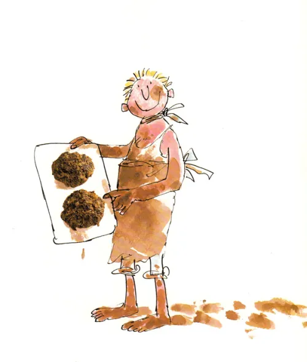

Homepage
Fresh Mudburgers

First introduced to the wider world by the centipede in James and the Giant Peach, these burgers are sure to satisfy you
You will need
Kitchenware
- Mixing bowl
- Grill or nonstick skillet
Ingredients
- 700g Beef (or fakemeat alternative)
- 1 Medium onion, chopped
- 3 Tablespoons tomato paste
- 2 Tablespoons dijon mustard
- 1 Tablespoon worcestershire sauce
- 2 Tablespoons capers
- Handful chopped parslet
- Salt & Pepper
- 1 Egg, beaten
Recipe
- In a mixing bowl, break up the ground beef.
- Add all the ingredients, except the egg and gently mix together
- Add the egg, mix thoroughly and pat into mudburger pattys
- Preheat the grill, and grill for ~4-5 minutes on each side, or fry in a nonstick skillet
- Serve pattys in a bun